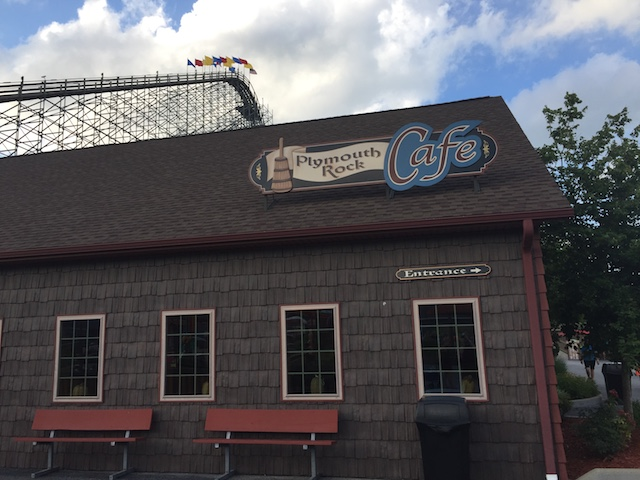
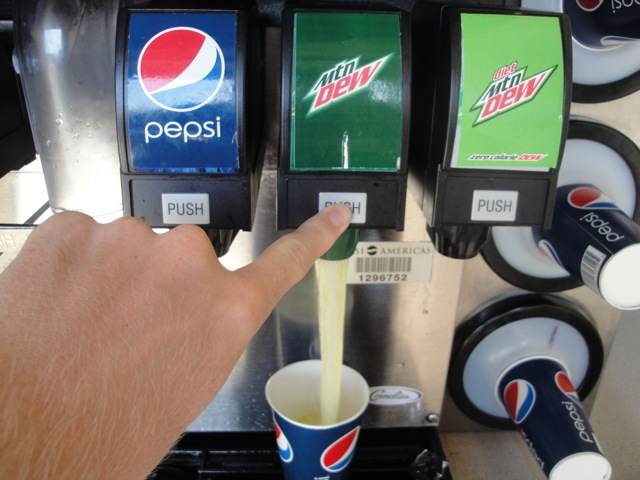

Holiday World may be a small park, but it's one of the most popular parks by enthusiasts. Now the park originally opened up at Santa Claus Land in 1946. However, later they wanted to incorporate other holidays, and BAM!!! Now it's Holiday World. The park never really got any attention up until 1995 when the park opened up the Raven. The ride was a smash hit and was claimed one of the best wooden coasters ever, popping up on all enthusiasts to do list. The park then continued on with making really good wooden coasters with the Legend in 1999 and the Voyage in 2006. All of which are high quality and fantastic wooden coasters. Hell, Voyage even managed to make our Top 10 Wooden Coasters List. However, the park is more than just great wooden coasters. The park has much more to it. They also recently just added a great steel coaster with Thunderbird, easily the best B&M Wing Rider. They have a decent flat ride collection, a cute and unique dark ride, good food and several perks. And along with Holiday World is the park's water park, Splashin Safari. Splashin Safari is definetly a great water park and is currently home to two of my favorite water slides, Wildebeest and Mammoth. So yeah, Holiday World not only has great balance, but it also has something for everyone to do. If you want a crazy coaster, check out Voyage. Really fun water slide? Mammoth is one of the most fun out there. Something for everyone to enjoy? Gobbler Getaway. Stuff for really small children? They've got stuff for you. And of course, there's all sorts of perks, such as free parking, free soda, and free sunscreen. So yeah. Come out and enjoy Holiday World. You'll have a blast. So definetly come and check it out.
Here are the reviews of all the Flat Rides at Holiday World. Well first off, we have the Liberty Launch. This is the parks S&S Double Shot. Trust me, while they may be small, they pack quite a punch. And this double shot is no exception. When you reach the top, EJECTOR AIR!!!! =) So definetly check it out. It's a really fun flat ride. The other flat ride that I rode at Holiday World would be the Turkey Whirl. This is the parks Tilt a Whirl. While nothing special, it is fun. And they theme it to turkeys. That's always a plus =). While those may be the only flat rides that I rode at Holiday World, there are many more in the park that I did not ride. They also have some flyers, a round up, some chairswings, a scrambler, some bumper cars, a carousel, a car ride, and a train.
Don't underestimate Double Shots by their small size. They pack a punch. =)
Dark Rides
As far as dark rides go, Holiday World's got their own unique little dark ride called Gobbler Getaway. This one may not be spectacular in special effects or craziness, but it's still a really fun shooting dark ride. The story that they use for the shooting dark ride is cute and unique. You're calling as many turkeys as you can so you can all have a badass Thanksgiving Pizza Party. Perhaps, I should try this in real life one Thanksgiving. =) But for now, I'll just ride Gobbler Getaway. It's not too hard to call the turkeys, but it's not the easiest shooting dark ride out there. Definetly give a spin when at Holiday World.
We originally wanted to have you shoot the turkeys, but PETAs blackmailing us.
Water Rides
Now I will say this. Holiday's water ride collection isn't necesarrily bad, but it used to be much better. Now this was all thanks to one water ride they used to have. Pilgrims Plunge. Now this isn't your ordinary Shoot the Chutes ride. For in fact, this was the largest shoot the chutes ride in the world. It was just a 135 ft drop with two metal towers sticking up in the air. So yeah. It was pretty damn intimidating. And it was totally awesome. The elevator was cool. It wasn't completely vertical, so you felt a little uneasy going up. And the 135 ft drop. It was FAST!!!! Pilgrims Plunge was a blast. Its a real shame that they took it out cause I really liked it. But on the bright side, there's a water coaster using the Pilgrims Plunge technology, Divertical over at Mirabilandia. Go ride that. Its even better, plus it counts as a credit. =) Now Holiday World does have two other water rides. Raging Rapids is just an ordinary rapids ride. Fun, but far from the best. And then there's Frightful Falls. This thing may look small and crappy, but the theming of this ride really makes it fun. Not only are the tombstones on the ride cool, but the fact that they play Dr. Demento on the lifthill just makes it super fun. So I'd definetly give it a ride while here.
Aww. I miss this ride. =(
Water Park
(Splashin Safari)
Yep, Holiday World does have a water park included with admission. Splashin Safari. Now this isn't like most parks where the water park that they have included is fun, but also kind of...meh. Just something fun for locals. An excuse for them to say that they have a water park. No. Splashin' Safari is really good. In fact, Splashin' Safari often gets ranked as one of the best water parks in the world. OK. I really like Splashin' Safari, but come on. It's the Golden Ticket Awards, and they primarily only are doing American Waterparks. International Parks be damned, which is why Aqualand Studios gets COMPLETELY ignored. Let alone a handful of international waterparks I haven't visited, but look like they totally kick ass. But even Schlitterbahn is better (And to be fair, Schlitterbahn is NOT overlooked or ignored). But still. Splashin' Safari is a fantastic water park, especially for being part of the park, and it does have some of the best water slides ever, as we're about to discuss.
The dining selection at Holiday World is not your average dining selection. They've got quite a selection at Holiday World. The biggest resteraunt that people talk about is the Plymouth Rock Cafe. The main gimmick of this resteraunt is that it serves the traditional Thanksgiving dinner yearround. So if you love turkey, stuffing, mashed potatoes, etc. And you're craving that, but it's June, have no fear. You can get it at Holiday World without having to wait for November. But if you're someone that, like me, isn't a fan of turkey, you can substitue the turkey for fried chicken, and then just get the stuff that you do like. But perhaps the best thing about Holiday World are simply the free drinks. Yep. The drinks here are free. And let me tell you. THAT IS FREAKING AWESOME!!!! For once, I felt fully hydrated at a theme park from getting a small cup of Mountain Dew every 30 minutes. Make sure you take advantage of this awesome perk!!! =)

Thanksgiving food is no longer limited to just Thanksgiving.

This cup of Mountain Dew cost me $0.00!!! =)
Theming and Other Attractions
Here are the reviews of all the other stuff at Holiday World. Well for theming, the park does have mild theming throughout the park. They have Christmas theming in Santa Claus Land, 4th of July theming in the 4th of July Area, Halloween Theming in the Halloween Area, and Thanksgiving Theming in the Thanksgiving Area. And as for other stuff to do, I know Holiday World has some other attractions. They have a diving show in the park, and I'm sure there's even more cool stuff. Perhaps when I go back, I'll check out some more of these other hidden gems within the park.
In Conclusion
Holiday World is a fantastic park to visit. They have some great wooden coasters, a great water park, a great steel coaster, great perks like free soda, parking, and sunscreen, and overall, the park is just great. It's not the absolute best park out there as there are many parks out there. But Holiday World is definetly one of the better ones. So if you're ever in the middle of nowhere Indiana, make sure you check it out.
Enthusiast FAQs.
*Are there kiddy coaster restrictions? - No. There are no restrictions on the Howler.
Tips
*Do Splashin Safari in the morning and Holiday World in the afternoon (Most people do it the other way).
*Be sure to check out all of their wooden coasters.
*Take full advantage of the free drinks and sunscreen.